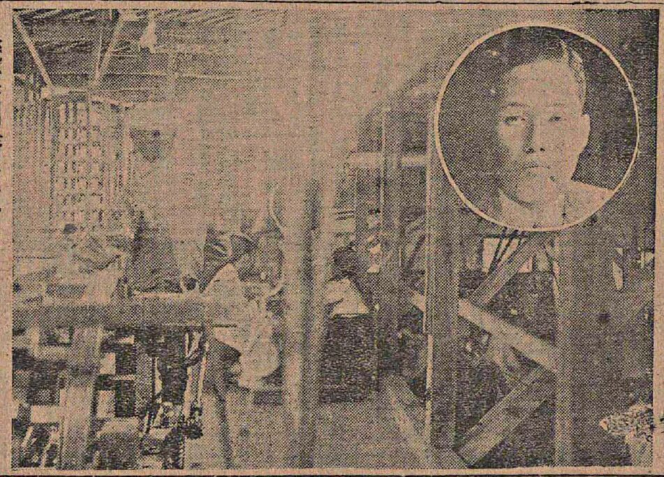
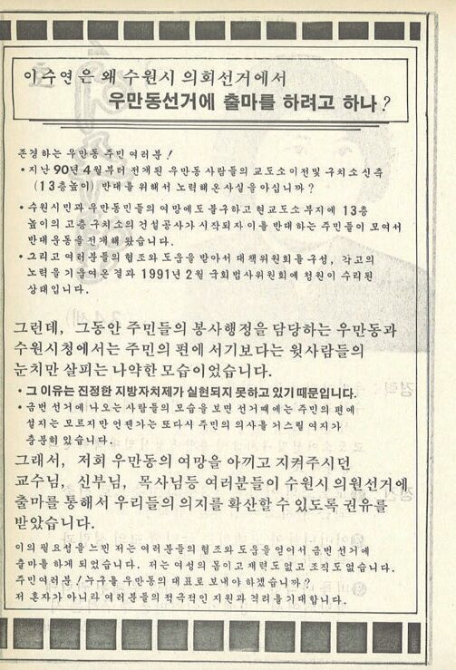

ARCHIVE LOG · 1920 — 2014 · 5 FILES
시대를 닮은
의원들
SUWON SELF-GOVERNMENT 100
수원은 누구를 대표로 뽑아 왔을까. 면협의회의 자산가부터 아파트 부녀회장 출신 여성 의원까지, 다섯 개의 서류철을 차례로 열어 봅니다.
- Source
- 『수원시의원으로 살다』 Ⅱ장 「수원시의원들의 사회적 배경」
- Text
- 황병주 · 유상희
- Files
- CODE_000 — CODE_006

자치와 통치, 그리고 정치
- Keyword
- 추첨 · 선거 · 대의제
태초의 정치는 자치일 수밖에 없다. 아테네 민주정은 지도자를 투표가 아니라 추첨으로 선발했고, 위험한 인물은 투표(도편추방)로 공동체 밖으로 내보냈다.
근대 민주주의는 추첨 대신 선거를 택했고, 대의제는 공동체 구성원 가운데 ‘우월한 자’를 선별하는 장치가 되었다. 그렇다면 수원은 누구를 대표로 뽑아 왔을까.
자산가의 의회
- Period
- 1920 — 1945
- Body
- 수원면협의회 → 수원읍회
- Files
- SCA-001 · SCA-002 · SCA-003
3·1운동 이후 총독부는 1920년 지방자치제를 시행했다. 1917년 지정면이 된 수원면에도 면협의회가 설치되었지만, 선거는 제한선거였다.
1931년 수원면이 수원읍으로 승격되면서 면회는 읍회가 되었다. 정원은 12명, 조선인과 일본인이 각 6명씩 동수였다. 1939년 선거에서는 14명 가운데 8명이 조선인이었다.
1929년 당선자들은 놀랄 만큼 젊었다. 이길태는 17세, 홍사선·윤태인은 20세, 이완선은 21세였다.
의원 대부분은 회사 중역과 상공인 같은 자산가층이었다. 자산은 곧 정치적 대표성의 자격이었다.
- 홍사선1928~1932년 4~5년 사이 누룩사업, 수원하주운송조합, 수원하주운송(주), 농업회사 만종원을 번갈아 설립했다. 해산 때 미수금 1만 2,000원을 경영난의 삼일학교에 기증했다. “농업의 진흥만이 수원의 살 길”.
- 이한승수원의 일류 재산가였으나 수재 의연금 모금을 ‘미친 짓’이라 매도하고 단돈 1원을 기부해 비판받았다.



전쟁 직후의 첫 시의회
- Period
- 1952 — 1961
- Seats
- 제1대 20명 · 1960년 15명
- Files
- SCA-004 · SCA-005 · SCA-006
1949년 7월 4일 지방자치법이 공포되었지만 전쟁으로 연기되었고, 1952년에야 첫 시·읍·면의회 선거가 치러졌다. 전국 시의원 선거에서 무소속이 47.5%를 차지했다.
제1대 수원시의회는 20명. 40대가 주축이었고, 대부분 1900년대 초 출생에 중등 정도 학력, 우익 청년단·관료 경력을 지녔다.
초대 의회는 도청 유치, 대한방직 유치, 휴전반대 결의안 등을 다루었다. 1960년 선거로 15명이 당선되었으나 5·16 군사쿠데타로 지방자치는 전면 중단되었다.
- 윤긍렬부호 윤태정의 장남. 와세다 수료, 민족청년단 수원단장. 4·19 이후 민선시장에 당선되었다.
- 차인순경성제2고보 졸업 후 정미소를 운영했다. 초대 전기 부의장.
- 최학배장남 최종건이 선경직물을 불하받았다 — SK의 출발. 최종건도 제2대 시의원이 되어 부자 시의원이 되었다.


30년의 공백, 그리고 부활
- Period
- 1961 — 1991
- Files
- SCA-007 · SCA-008
“중앙 정치무대의 지방판”— 30년 동안 수원의 정치는 이 수준에 그쳤다
1991년 기초의회 선거로 지방자치가 부활했다. 그사이 수원은 산업화·도시화를 거치며 ‘전국화’되었다.
영호남·충청 출신 이주민이 늘었고, 향우회 네트워크가 정치의 통로가 되었다. 제10대 김진관과 충청향우회가 그 예다.


시대를 닮은 의원들
- Period
- 1991 — 2014
- Keyword
- 지역 유지 · 관변단체 · 학력 인플레
“사람은 아버지보다 시대를 닮는다.”— 아랍 속담
제4대 조명환의 이력은 지역 유지형 의원의 전형이다. 라이온스클럽 초대 회장, 새마을운동 수원시지회장, 태권도·역도 협회 등 관변단체·사회단체·동창회·향우회가 정치 경력의 사다리였다. 시의원은 2003년까지 무보수 명예직이었고, 그 자리는 ‘봉사’의 언어로 설명되었다.
PATH_A // 관변·여당→
- 이종구 — 재건국민운동, 공화당 동 관리장, 새마을금고 이사장
- 박우양 — 새마을운동 → 민자당
PATH_B // 야당→
- 이태호 — 민주대학, 버드내 청년회장
- 김현철 — 제5대 최연소, 민주노동당
가장 낮은 곳에서
- Period
- 1991 —
- Files
- SCA-009 · SCA-010 · SCA-011
제4대 이수연은 수원시의회 첫 여성 의원이었다. 우만아파트 부녀회장 출신. 『수원시의회사』는 그를 ‘예쁜 딸’ 같은 젠더화된 시선으로 서술했다.
제5대 정금란, 그리고 권선구·팔달구 새마을부녀회장에서 민자당 팔달지구 지회 부회장으로 이어진 허영순이 뒤를 이었다.
여성의 정치 진출은 기존 질서를 타고 이루어지는 경우가 많았다.



“가장 낮은 곳에 위치했던 여성들이 가장 높은 정치무대로 비상할 수 있다면 그만큼 수원 지역정치의 미래는 밝을 것이다. 물론 이것은 일부 여성들의 출세가 아니라 낮은 곳에 있던 모든 이들의 비상이어야 함은 물론이다.”
— 황병주·유상희, 「수원시의원들의 사회적 배경」 · END OF FILE
컬렉션에서 원자료 보기 →